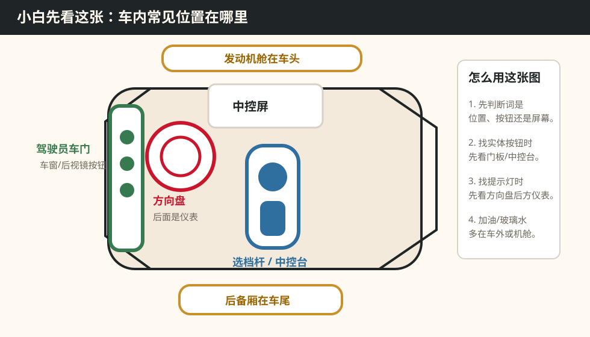

Beginner Glossary · 车内地图
不懂术语，先来这里查
这里专门解释“选档杆、中控台、MMI、踩住制动踏板、按钮灯亮”这类基础词。问题页只放最关键解释，更多细节统一放在这里。
词典范围
A4L
位置词 / 动作词 / 功能词 / 状态词
车内区域地图
先用这张图建立方向感：按钮、屏幕、仪表、机舱和后备厢分别大概在哪儿。

Beginner Glossary · 车内地图
这里专门解释“选档杆、中控台、MMI、踩住制动踏板、按钮灯亮”这类基础词。问题页只放最关键解释，更多细节统一放在这里。
先用这张图建立方向感：按钮、屏幕、仪表、机舱和后备厢分别大概在哪儿。
